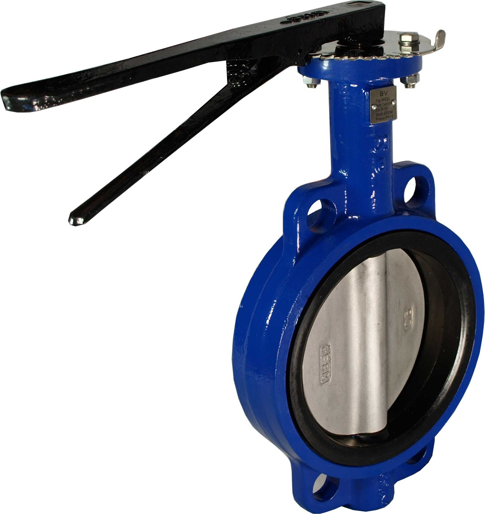

Butterfly valves are quarter-turn rotary valves in which a disc-shaped closure member is rotated through 90 degree or less to open or close or regulate the flow passage. Butterfly valves may be used for flow in both directions. Unlike a ball valve, the disc is always present within the flow, therefore a pressure drop is always induced, regardless of valve position.
This type of butterfly valve uses an inflatable seal to generate a tighter seal than traditional butterfly valves. The disc is moved into the tapered seat with the hose deflated so that the seating torque is minimal. The hose is then pressurised to provide a fluid-tight seal against the seat.
Lined butterfly valves use a liner to help the valve generate a solid seal between the disc and body. Where the inflatable seal butterfly valve has this flexible seal located on the disc, the lined butterfly valve has its flexible material located within the valve body. For most butterfly valves, this liner will likely be made of a flexible elastomer.
The lug-style butterfly valve has threaded lugs outside the valve body. Two sets of bolts connect pipe flanges to each side of the bolt inserts without nuts. This design enables the disconnection of one side without affecting the other for dead-end service. Lug-style butterfly valves used in dead end service generally have a lower pressure rating.
A wafer-style butterfly valve is the most economical version and it is sandwiched between two pipe flanges and the flange bolts surround the valve body.
Butterfly valves are actuated by quarter-turn, rotary actuators. This could be manual through the use of a hand-wheel or basic lever, or electric using a motor and gear box. Rotational actuation is also possible using pneumatic and hydraulic actuators. This could be a piston or a diaphragm connected to a rack and pinion or scotch yoke to convert linear to rotational motion.